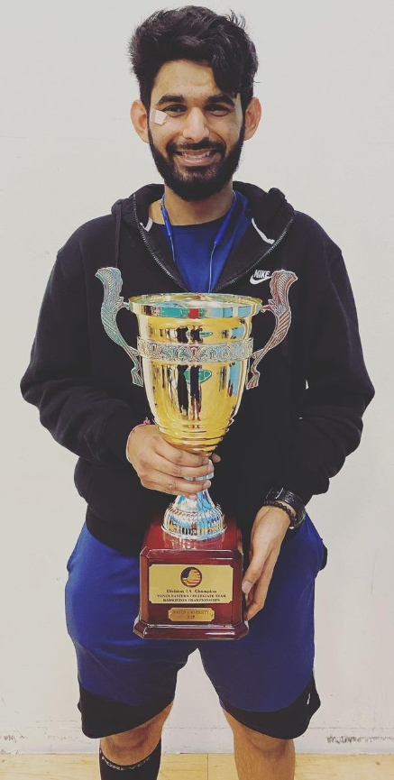
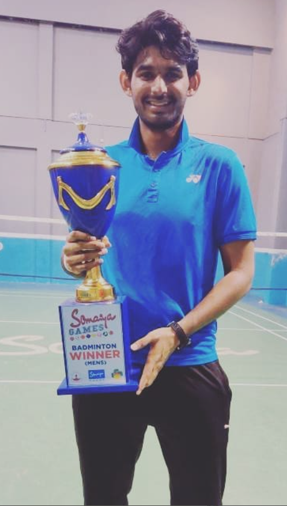
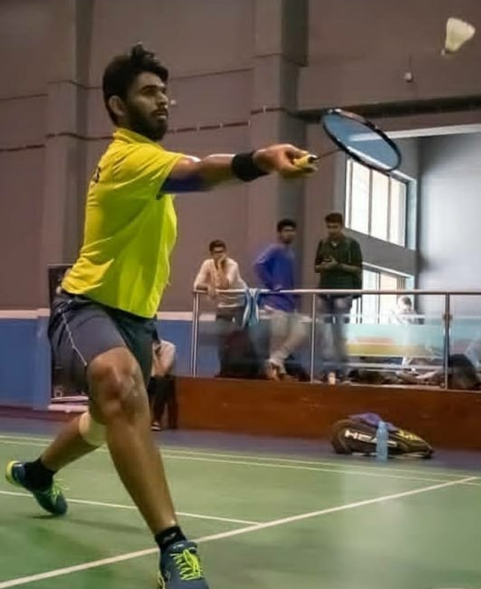
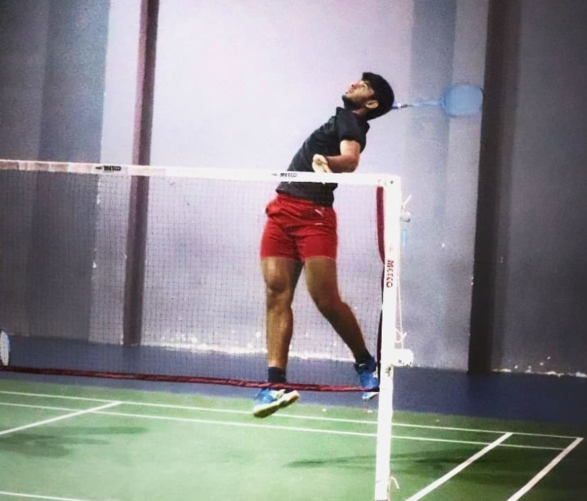
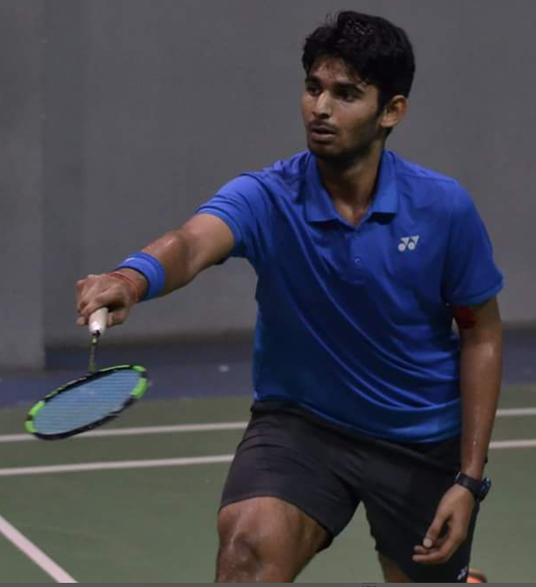

|
I love sports, which must be evident from the fact that I dedicated a whole section on my website for this. I have been a National level Handball player, National
level track and field athlete winning many accolades in Shotput, Javelin throw, and Discus throw.
I also love playing badminton, my earliest memory of picking a racquet at 7 years old, my dad telling me to hit a backhand!! |
|  |
|  |
|  |
|  |
|  |